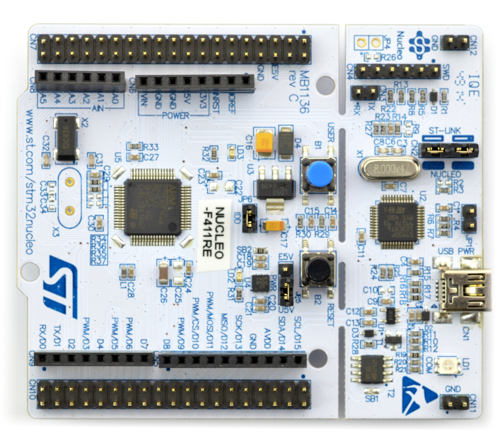

Project Highlights
Please visit my GitHub to visit all of my projects with more in-depth project descriptions and downloadable program files.
@JenTat
Real-Time Executive: (RTX)
View my project on GitHub!
Implemented a real-time executive (RTX) on the ARM Cortex M4 microprocessor using chip STM32F411RE .
Provides a basic multi-programming environment that supports
priority (via deadlines),
pre-emption (pre-emptive scheduling using the Earliest Deadline First scheduler), and
dynamic memory management using the first-fit memory allocation scheme.
Support a fixed number of tasks, specified at compile-time, and supports task creation and termination during runtime.
Enforces a division between the kernel and user space.
Developed using C , ARM Assembly Language , and STM32CubeIDE for automated testing.

Latinization of Tetris: Biquadris
View my project on GitHub!
Created a Latinization of the game Tetris, expanded for two player competition; utilizing
C++ and MVC architecture.
Developed both a text-based display and aesthetically-pleasing graphical display of the game board.
Produced a system that encapsulates the decision-making process by offering multiple levels of difficulty and special actions.
User Experience Optimization Device: "!surprised"
View my project on GitHub!
Worked within a team of 5 to create a Raspberry Pi device that detects the ambient noise and brightness levels in any given environment.
Developed an application and graphical user interface that adjusts the volume and screen brightness of the user’s device to best suit the user’s external conditions.
Utilized light sensors, microphone, Python and various Python libraries (eg. Tkinter, PyCaw, etc.).
View my project on GitHub!
Reads and parses data pertaining to decades of past TED Talks from multiple files and datasets.
Created new data structure specific for TED Talk data.
This new data structure contains multiple data types.
Data is filtered, categorized, and re-organized to be printed for a more user-friendly experience.
Utilized Python and datasets from Kaggle .